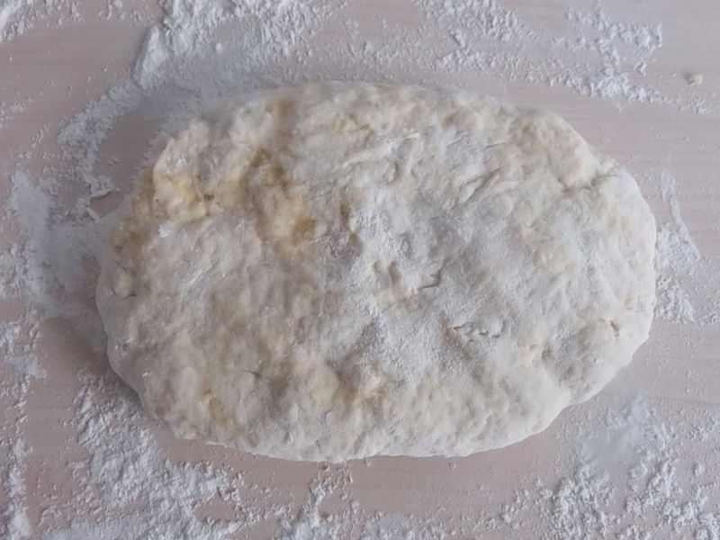
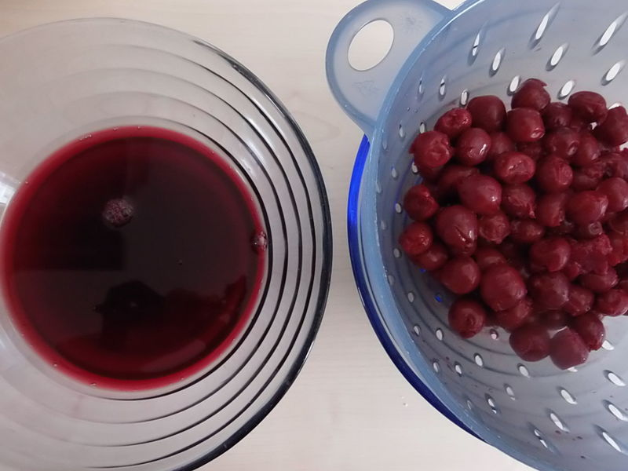
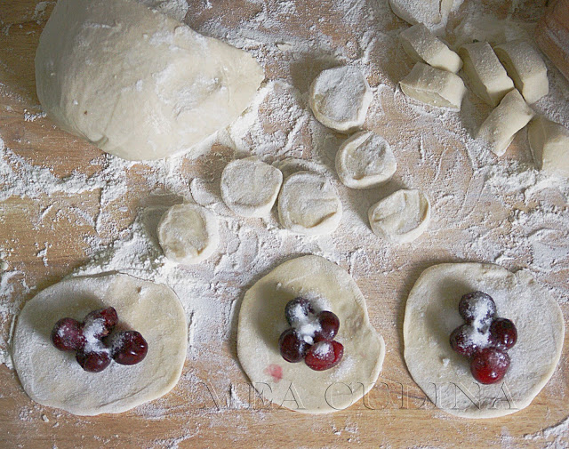

Zutaten
- 1 Glas Mehl
- 1,5 EL Pflanzenöl
- 1 Prise Salz
- 0,5 Glas Wasser
- 250 g Kirschen
- 3 EL Zucker
- 1 EL Mehl
Zubereitung
Mehl sieben, mit warmem Wasser, Öl und Salz zu einem festen Teig verkneten. In ein Tuch wickeln und ca. 1 Stunde ruhen lassen.
Kirschen waschen, entkernen und mit Zucker bestreuen. Saft abgießen, Kirschen mit Mehl vermengen.
Teig dünn ausrollen, Kreise ausstechen, Kirschen einlegen und gut verschließen.
In Salzwasser ca. 5 Minuten kochen, gelegentlich umrühren. Mit Kirschsaft servieren.